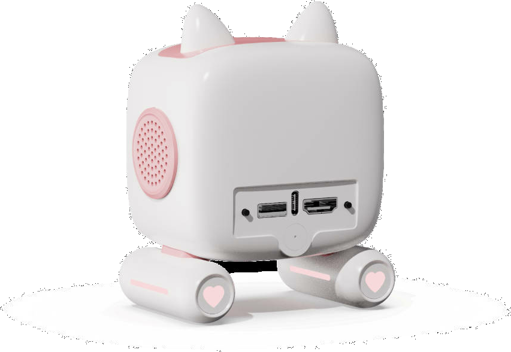
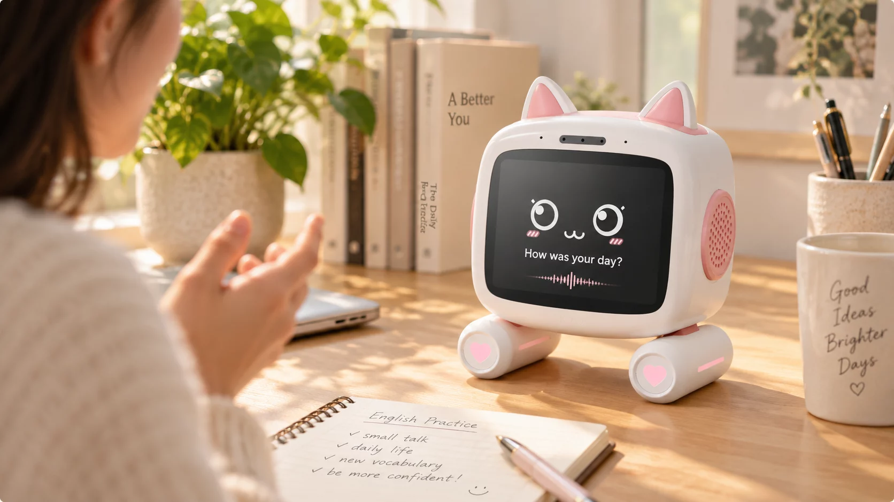

A133 + Tina Linux稳定可靠的系统底座
H.264 WebRTC低延迟音视频传输
A/B OTA 回滚稳定升级，失败可恢复
可贴牌定制满足企业个性化需求
CORE CAPABILITIES
一套硬件，四种核心能力
把自然交互、视觉感知、电脑操作和长期运维装进一个小巧的桌面终端。
01
自然 AI 对话
语音唤醒、流式文字与语音回复，支持 AEC 和人声打断，让对话更自然。
听见 · 理解 · 回应02
看见电脑画面
通过 HDMI 实时预览、截图与 H.264 WebRTC，把电脑屏幕变成 AI 的视觉输入。
HDMI · H.264 · WebRTC03
受控键鼠操作
以 USB HID 执行受限键盘与鼠标动作，提供急停、任务上限和自动释放机制。
USB HID · 安全急停04
安全升级运维
A/B OTA、失败回滚、恢复镜像与版本审计，支撑设备从样机走向批量。
OTA · 回滚 · 恢复

IPKVM CONNECTED
AI + IPKVM SOLUTION
电脑不在身边，
也能直接操作
小咪通过 HDMI 看见电脑画面，由 AI 理解当前内容，再通过受限 USB HID 完成键鼠动作。
-
1
HDMI 捕获实时获取电脑画面
-
2
AI 理解识别界面与任务目标
-
3
USB HID 执行受控完成键鼠动作
动作始终可控提供立即停止、任务上限与 HID
自动释放。
BUILT FOR REAL WORK
从桌面陪伴，到真实生产力
同一产品形态，在生活与工作之间自然切换。

AI COMPANION
随时自然对话
听见问题，也懂你的使用情境。

HDMI VISION
看见电脑屏幕
ONE DEVICE
小巧的身躯，
完整的软硬件能力
- 本地 LVGL 桌面与应用
- Wi-Fi、蓝牙与手机配置
- WS2812 状态灯反馈
- 量产烧录与设备身份
DELIVERY PACKAGES
从验证样机，到行业落地
按你的产品阶段选择交付深度，每一档都建立在同一套可运行的平台之上。
01快速验证
标准方案版
适合希望快速验证市场的品牌和渠道商。
- 参考主板或标准整机
- Smart Desktop Mimi 系统镜像
- 标准 AI、网络与升级能力
- 烧录、恢复和验收资料
推荐
02形成品牌
品牌定制版
适合需要差异化体验与自有品牌的客户。
- 品牌名称、启动画面和桌面 UI
- AI 角色、音色与知识内容
- OEM App 或客户 App 接入
- 客户外壳与声学结构适配
03进入业务
行业解决方案版
适合展厅、酒店、零售和办公终端场景。
- 行业知识库与 MCP 工具
- HDMI/IPKVM 受控操作
- 设备管理、日志与 OTA 策略
- 批量账号、区域和版本运营
READY FOR PRODUCTION
不只做出 Demo，
也为量产负责
从一机一密、工厂烧录到 OTA 回滚与售后恢复，关键生产链路都有明确交付边界。
100×建议连续冷启动验收
72h建议 AI 稳定性运行
A/B升级失败自动回滚
-
01
样机验证
以可运行标准整机验证客户场景。
-
02
需求冻结
确认硬件、云服务、UI 与验收范围。
-
03
小批量准备
完成工厂测试、烧录与合规预评估。
-
04
量产交付
版本可追溯，支持持续升级与维护。